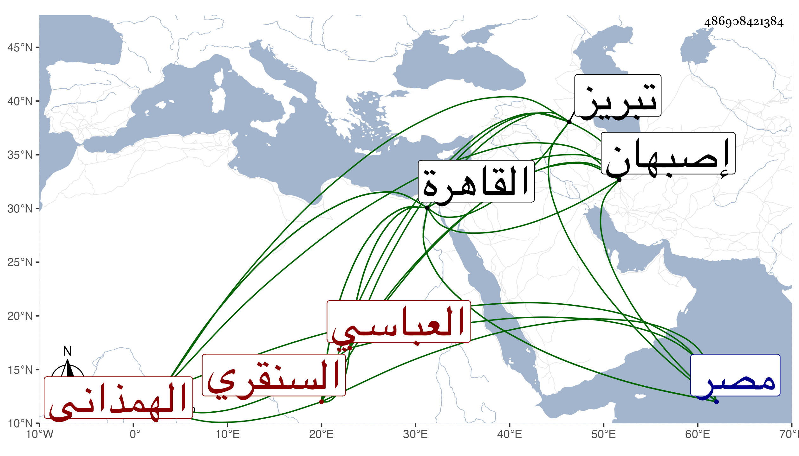

0902Sakhawi.DawLamic.ITO20230111-ara1.EIS1600.486908421384
Biography ID: 486908421384
496
محمد بن بهاء الدين بن محمد العباسي السنقري الهمذاني نزيل القاهرة وأحد أصحاب ابن الغمري قال لي أنه قرأ على أبيه المحرر والايجاز والعزي والمراح والحاجبية والمتوسط وشرحها وحفظ كفاية المتحفظ لابن الاجدابي وفقه اللغة للثعالبي وأتقنهما بمعاونة أبيه أيضا ثم أخذ على مع الكتابة مع فن الانشاء عن السيف البروجردي ، وارتحل لساوة فقرأ على الشرف يعقوب علي الكرهرودني بديعية سليمان الساوى مع طرف من العروض ثم لأصبهان فقرأ على الشرف على اليزدي تصنيفه الحلل ثم إلى تبريز فكتب على عبد الرحيم الخلوتي جميع الأقلام السبعة مع قراءة سائر تصانيفه وتصانيف شيخه محمد الحلو في التصوف وغيره ، ودار ديار بغداد كلها وقرأ على ناصر الدين عمر المارينوسي المصابيح مع سماع الحاوي ثم القاهرة فقرأ على ابن أسد المنهاج وعلى البامي التنبيه مع سماع البخاري وعلى عبد القادر بن شعبان أمام جامع أصلم الكافي في العروض والقوافي والخزرجية وغيرها من كتب العروض والفرش للخليل ومختصره لابن عبد ربه وعلى العلم الحصني بزاوية خشقدم الوزير من القرافة الكبرى شرح الاصطلاحات للقاشاني وعلى الشرواني الفصوص والرموز والأمثال اللاهوتية في معرفة الأنوار المجردة الملكوتية ، وعليه وعلى أصحابه كالجمال عبد الله الكوراني الموشحة المسمى بالخبيصي وشرح الشافية للجار بردى وتلخيص المفتاح والمختصر والمطول كلاهما عليه والأصلين مع الكتب المعتبرة . في المنطق والطبيعي والألهي وعلة بعض أكابر الغرب النصوص والفكوك وكتاب الرتبة للمجريطي ولازم النظر فيه وفي كتب الرموز والرتبة والكنز لابن مسكويه الاصبهاني مدة ثم أعرض عن ذلك كله وقطن زاوية تقي الدين عند الصبوة ينسخ ويقرئ ، ولزم أبا العباس بن الغمري وأكثر التردد إليه وكتب له صحيح البخاري ومسلم وغير ذلك ، وعرض عليه ولده محمد في سنة ثمانين ثم أقرأه وغيره في جامعه النحو والصرف ، وكثر تردده إلي أيضا مع السؤال عن أشياء ، وفيه تودد ولطف عشرة وعلى همة واستحضار لنكت وفوائد مع تقلل وتجرد وجودة خط ومشاركة في الجملة وقال فيما رأيته بخطه من كلماته حبسته يد التقدير في ظلمات مصر ومهاويها كلما أراد أن يخرج منها أعيد فيها .
